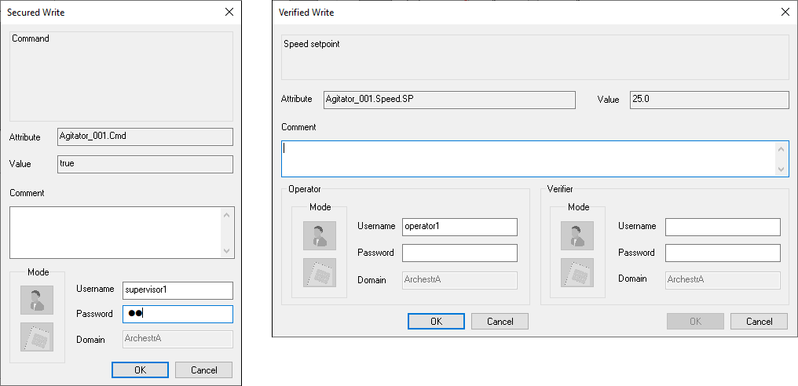
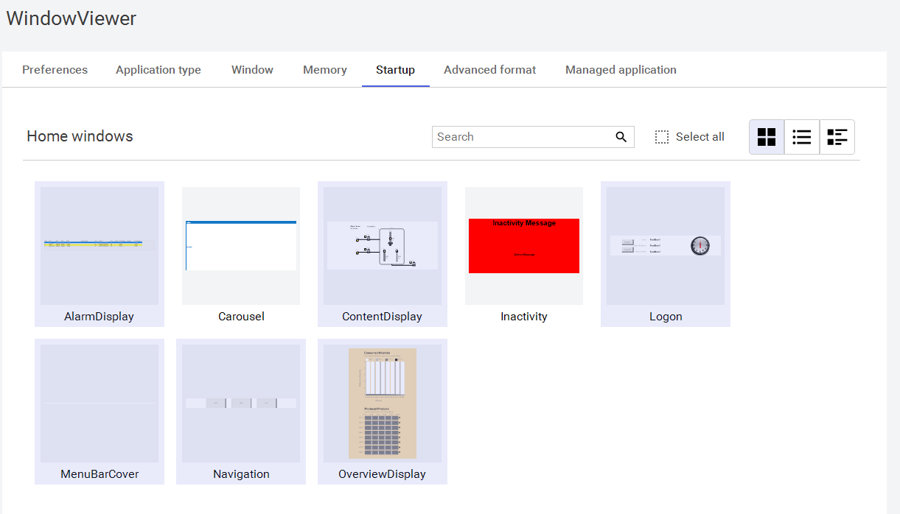
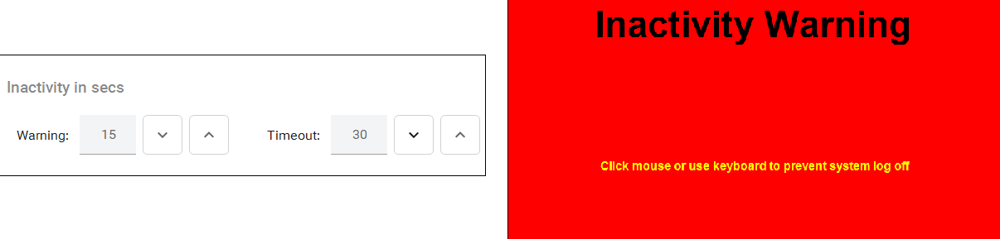
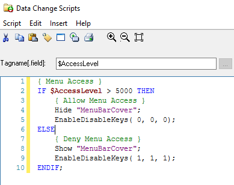
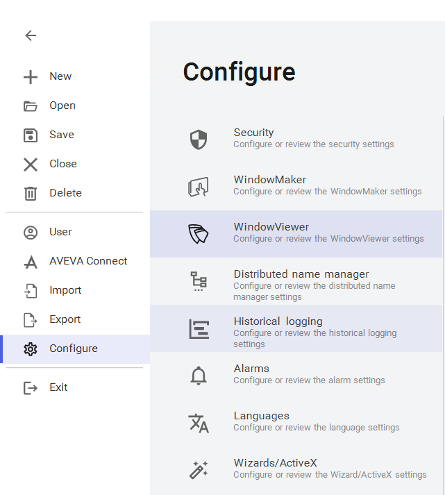

Security settings Users tab showing user list (Administrator, DefaultUser, TUser) with role assignments — Administrator and Default roles available, TUser assigned to Default and Training roles
Module 7 — Security | Pages 473–500
Assigning Users to Roles
After creating users and roles, you can assign users to roles. On the Users page, all users in the
Galaxy and the roles they are assigned are listed.
By default, the new user is associated with the Default role, but not the Administrator role. Users
can be assigned to more than one role.
Note: All users are automatically assigned to the Default role in addition to any newly created
roles that are assigned to them. The best way to manage permissions is to limit the permissions of
the Default role to those permissions people should have. Then, add users to other roles with
permissions for other parts of Application Server.
The Administrator user can log on any authentication mode, except when security is disabled.
When logged on as Administrator on the Galaxy Repository node, change the password of any
Galaxy user without providing the old password:
In Galaxy authentication mode, edit the User Name in the Change Password dialog box.
In OS-based authentication modes, the User Name of the OS user is shown; user
information cannot be edited.
This section provides a brief overview of the Secured Write and Verified Write security
classifications, the Can Verify Writes Operational permission, and the Secured Write and Verified
Write dialog boxes.
About OS Group-Based Security
If the OS Group-based Authentication Mode is used, understand the Windows operating system,
particularly its user permissions, groups, and security features. OS Group-based security uses
these Windows features. When using local OS Groups as Roles, each node within the Galaxy
must have the same OS Users, Groups, and user-group mappings to get the same level of access
to the user at each node.
Connecting to a Remote Node for the First Time
A newly-added user working on a computer with no access to the Galaxy Repository node cannot
write to an attribute on a remote node, if that user has never logged on to the remote node. This is
true, even if the user is given sufficient runtime operational permissions to do writes. To enable
remote writing capabilities, log on to the remote node at least one time.
Using InTouch Access Levels Security
The Roles page includes the Access Level column. The Access Level is an InTouch function.
In InTouch, access levels are a schema for prioritizing runtime functions. In the security model, it
only maps to InTouch values and has no prioritizing characteristics.
The maximum value is 9999 and the minimum is 0 (zero). If a user is assigned more than one role
with different access levels, the higher access value is passed to InTouch.
Using Secured and Verified Writes
Assign Secured Write or Verified Write security classification to a configurable attribute. These
security classifications require authentication to perform runtime writes to the configured attribute.
With authentication, users can write to such attributes by:
Any assignment in a script that sets the value of the attribute, such as A=B; where A
references an attribute that is configured for Secured Write or Verified Write security
classification
Any action on an animation graphic that alters the value of an attribute that has Secured
Write or Verified Write security classification, such as a user input, a slider, an up/down
button on a counter, or any other such actions
A script that uses the SignedWrite() function
Operators can write to attributes configured with Secured Write or Verified Write security
classification, even if another user is logged on. This does not affect the session of the logged on
user. To do this:
The operator must have the Can Modify ''Operate'' Attributes Operational permission to
perform the Verified Write.
The verifier must have the Can Verify Writes Operational permission to confirm the
Verified Write.
Note:
The Secured and Verified Write features work only when security is enabled on both
the Galaxy and InTouch applications and do not work if either Galaxy or InTouch security is set
to None.
Secured Write or Verified Write Dialog Boxes and Script Functions
At runtime, the Secured Write or Verified Write dialog boxes appear when the operator attempts to
write to an attribute configured with Secured Write or Verified Write. The dialogs enable
configurable user input that can be used to provide information about the Secured or Verified
Write.
Create a symbol and associate it with an attribute configured with Secured or Verified Write. Add
the script function to the symbol. The source to be written is passed as a parameter to the function.
Use the SignedWrite() script function to configure these inputs. The script function can only be
used for attributes configured with Secured Write or Verified Write and symbol scripts, not for
application object scripts.
Reason Description
The reason description is specific to an attribute. It explains the purpose of the attribute and the
impact of changing it. If a reason description is not configured, the reason description area is
blank.
It is possible to use a script to directly assign a value to an attribute that requires Secured or
Verified Write. When the script is ran, the Secured or Verified Write dialog box appears and the
reason description area displays a Field Attribute description, if there is one. If the attribute is not a
Field Attribute or does not have a description, then the reason description area displays the
description of the ApplicationObject to which the attribute belongs.
Predefined Comment List
The predefined Comment list enables the operator to comment on changing the attribute by
selecting from a predefined list of comments.

Editable Comment Box
Enables the operator to enter a comment in the Comment field.
Note: The reason message and Comment field and list are displayed in the Secured Write or
Verified Write dialog box, only in InTouch WindowViewer and not in Object Viewer.
About Secured and Verified Writes Logged Information
Following a Secured or Verified Write, a security Event is written to the event log that includes the
following information:
The signee name
Verifier name, if any
Type of write: Secured Write or Verified Write
Comment, if any entered by user
Reason Description, if any provided
Field Attribute description, if any, or the Short Description of the ApplicationObject, if no
Field Attribute description exists
Introduction
In this lab, you will test the InTouch Secured Write and Verified Write functions when writing to
attributes configured with Secured Write and Verified Write security classifications. To be able to
test this functionality, you will modify the mixer valves with security classifications. You will also
create new security Roles and Users to represent the operator and supervisor accounts that will
access the system.
Objectives
Upon completion of this lab, you will be able to:
Use the Secured Write and Verified Write functions in InTouch
Enable the Operate and Can Verify Write permissions

Create and Configure Roles and Users
First, you will configure additional roles and users that will be used to test both secured and
verified writes.
1.
Close WindowMaker and check in the $MixerView template.
Note:
Remember that security configuration requires that all objects are checked in. The
Find tool is useful for this task.
2.
In the IDE, on the Galaxy menu, select Configure | Security.
3.
On the Roles tab, in Define security roles, select the Default role.
4.
In Operational permissions, uncheck Default and then expand it.
5.
Under Alarms, check Can Acknowledge Alarms.

6.
Click Add new Role (+).
7.
Name the new role Operators with an Access level of 1000.
8.
In Operational permissions, expand Default, and then check Can Modify “Operate”
Attributes.


9.
Add a new role named Supervisors with an Access level of 5000.
10. In Operational permissions, expand Default, and then under Alarms, check the following:
Can Shelve Alarms
Can Modify Alarm Modes
Can Modify Plant States
11. Scroll down to the bottom and check Can Verify Writes.
12. On the Users tab, add a new user named Operator1 with a Full name of Operator One.
13. In the Role list, check Operators to associate the Operators role with Operator1.


14. Click Change Password.
15. In both New Password and Confirm New Password, enter ww.
16. Click Save to close Change Password.

17. Add another user named Operator2 and configure it as follows:
Full name:
Operator Two
Role:
Operators
Password:
ww

18. Add another user named Supervisor1 and configure it as follows:
19. Click Save and exit the backstage.
Configure Attributes with Signed Write Security Classifications
Next, you will configure agitator objects with attributes with signed write security classifications.
20. On the Templates tab, in the Training \ Project toolset, double-click $Mixer.Agitator to open
it for editing.
21. In Attributes, ensure the Cmd attribute is selected.
22. In the right pane, in Initial value, click the Security Classification icon, and then select
SecuredWrite.
Full name:
Supervisor One
Role:
Supervisors
Password:
ww


23. In Initial value, click the Lock icon to lock it.
This will propagate the security classification change to the instances when you deploy.
24. In Attributes, select the Speed.SP attribute.
25. In Initial value, click the Security Classification icon, and then select VerifiedWrite.
26. In Initial value, click the Lock icon to lock it.
27. Save and close the $Mixer.Agitator template, and check it in.
28. Open $Mixer.Agitator again.
29. In Attributes, ensure the Cmd attribute is selected.
30. In Initial value, click the Lock icon to unlock it.
This will allow the attribute values to be changed at runtime.


31. In Attributes, select Speed.SP.
32. In Initial value, click the Lock icon to unlock it.
33. Save and close the $Mixer.Agitator template, and check it in.
Redeploy the Agitator Objects
Now, you will redeploy the updated agitator instances.
34. In the Derivation view, expand $UserDefined\$Motor\$Agitator\$Mixer.Agitator.
The agitator instances indicate that changes are pending deployment.


35. In the Derivation view, select Agitator_001, press and hold Shift, and then select
Agitator_008.
All eight Agitator instances are selected.
36. Right-click the selection and select Deploy.
37. Keep the default settings and click Deploy.
When the deployment is complete, Deploying Objects indicates eight Agitator objects are
deployed.
38. Click Close.

Test in Runtime
Finally, you will test writing to attributes of the agitator instances as different users.
39. On the Templates tab, in Training\ViewApps, double-click $MixerView to open
WindowMaker.
40. Click Open to open the selected windows.
41. Click Runtime.
WindowViewer opens with no user logged in.
42. In the Navigation window, click Alarm Overview.
43. In AlarmAggregationOverview, in the Production alarm panel, click the up-arrow to the right
of the Mode label.
A command panel with a drop-down appears.
44. Click the down-arrow and select Disable.


The Apply button appears.
45. Click Apply.
Because no user is currently logged in, alarms are not disabled. Disabling alarms requires the
Can Modify Alarm Modes permission. Next you will log in as a user with this permission.
46. Close AlarmAggregationOverview.


47. In the Logon window, click Logon.
48. In User name, enter Supervisor1 with a Password of ww, and then click OK.
Supervisor One is logged in. This user has permission to modify alarm modes.
49. In the Navigation window, click Alarm Overview.
50. In AlarmAggregationOverview, in the Production alarm panel, click the up-arrow to the right
of the Mode label.
51. Click the down-arrow and select Disable.
52. Click Apply.
Alarms are disabled.

53. Use the Production alarm panel to enable alarms.
Alarms are enabled.
54. Close AlarmAggregationOverview.

Next, you will use secured write.
55. In the ContentDisplay window, click Agitator_001.
The command panel appears.

56. On the command panel, click Start.
Secured Write appears.
Notice that the current logged in user, supervisor1, appears in Username.
57. In Comment, enter Attempt to start the motor.
58. In Password, enter ww.
59. Click OK.


The Quality & Status indicator shows the write operation failed. Supervisor One does not have
the Operate permission. Next you will log on as a user with the Operate permission.
60. Close the Agitator_001 command panel.
61. Log on as Operator1 with a password of ww.
62. Click Agitator_001 and attempt to start the motor.
63. In Secured Write, for Comment, enter Start motor, for Password, enter ww, and then click
OK.
The motor starts. Operator One has the Operate permission.
64. Close the Agitator_001 command panel.
Next, you will use verified write.
65. Click Agitator_001.
66. In the command panel, click the value to the right of Speed setpoint, enter 25, and
press Enter.
Verified Write appears.


67. In Comment, enter Adjust rpm.
68. In Operator, for Username, enter Operator1, for Password, enter ww, and then click OK.
69. In Verifier, for Username, enter Operator2, for Password, enter ww, and then click OK.
The Quality & Status indicator shows the write operation failed. Operator Two does not have
the Can Verify Write permission. Next you will try again using Supervisor One as the verifier.


70. In the command panel, click the value to the right of Speed setpoint, enter 25, and press
Enter.
Verified Write appears.
71. In Comment, enter Adjust rpm.
72. In Operator, for Username, enter Operator1, for Password, enter ww, and then click OK.
73. In Verifier, for Username, enter Supervisor1, for Password, enter ww, and then click OK.
The Quality & Status indicator shows the write operation succeeded. The Speed setpoint is
updated to 25 rpm. This is because Supervisor One has the Can Verify Write permission.
74. Close the command panel.


Next, you will use the Alarm Client to verify events were generated for both successful and
unsuccessful verified writes.
75. In the Navigation window, click Historical Alarms.
76. In AlarmHistDisplay, click Historical Events.
Events are listed. The Alarm Client shows Verified Write access denied and Verified Write
success messages.
In the example below, column widths were adjusted to highlight important information. You
may need to scroll to the right to view the Operator column.
77. Close AlarmHistDisplay.
78. Click Development! to return to WindowMaker.

InTouch WindowViewer Timeouts
You can configure WindowViewer to automatically log off an inactive operator from an InTouch
application. An operator must log on again, after being logged off for inactivity. Setting an
automatic inactivity log off period prevents unauthorized access to the InTouch application, when
operators leave their workstations unattended.
A timer measures the period the operator has not interacted with the running InTouch application.
The timer resets each time the operator uses a mouse or any other input device to enter data. The
timer is not reset by moving the mouse. A click is required to reset the timer.
Setting Home Windows
Home windows create the initial user experience at runtime. When WindowViewer starts, the
Home windows are displayed. This behavior only occurs when WindowViewer is started from its
icon, such as from the Windows Start menu. When clicking the Runtime fast switch in
WindowMaker, the Home windows are not displayed in WindowViewer.
In WindowViewer runtime settings, you can select the Home windows on the Startup tab.
Without Home windows enabled, when WindowViewer starts from its icon, it presents a list of all
available windows. If an unauthorized user has access to a list of all windows, they can open
windows that may contain vital areas of the plant and potentially shut down processes, stop and
start equipment, and change setpoints. It is therefore critical in any security implementation to set
the Home windows of WindowViewer to prevent this list of windows from appearing.
Home windows should never include windows that give access to critical areas of the plant or
intellectual property of the organization. It is a best practice to select windows that unauthorized
This section explains how to customize the runtime environment to more fully secure and protect
the application. It also describes how to configure the InTouch runtime environment for inactivity
and introduces the EnableDisableKeys() script function.

users can view without exposing important information. Once an authorized user logs in, access
can be granted to more vital areas.
Locking System Keys
You can restrict operator access to standard Windows functions by disabling system keys on the
computer running an InTouch application. For example, you can prevent an operator from using
the CTRL + ALT + DEL key combination to show the Task Manager dialog box. Disabling system
keys prevents operators from switching from the InTouch to another Windows applications.
WindowViewer supports two methods for disabling keyboard keys.
The first method is by using a set of options on the Window tab when configuring WindowViewer
settings. In Miscellaneous, there are check boxes for Disable ALT key, Disable ESC key, and
Disable WIN key. These options can be enabled by first disabling the check box Enable fast
switch. When these disablements are used, their effect is permanent at runtime. A static approach
does not allow dynamic behavior associated with which user is logged on. It permanently disables
these keys for all users at runtime. For example, an administrator would not be able to use the
WIN key to open the Start menu if it has been disabled using the Disable WIN key filter.
The second method uses the EnableDisableKeys() script function to enable and disable the ALT,
ESC, and WIN keys. A script can be written to monitor the access level of the current user and
include the EnableDisableKeys() with different settings for different users. This second method
using a script is dynamic, unlike the first method, which is permanent. A scripting approach can
adapt use of keys for users with different responsibilities in the plant.
Function Definition
The order of the keys in the function is as follows:
EnableDisableKeys(AltKey,EscKey,WinKey);
When using this function in a script, you would replace AltKey, EscKey, and WinKey with a 1 or 0
for each, where 0 enables the key and 1 disables it. For example:
To enable all three keys:
EnableDisableKeys(0,0,0)
To disable all three keys:
EnableDisableKeys(1,1,1);
To disable only the WIN key:
EnableDisableKeys(0,0,1);
Introduction
In this lab you will configure automatic logoff and secure your application from unauthorized
access. When no user is logged into the application, you will hide sensitive information from
unauthorized users and restrict access to the application using scripts.
You will create two popup windows, one to display a message when inactivity occurs and another
to hide the WindowViewer menu bar.
Finally, you will create a script to prevent the use of special access keys, including the Alt, Esc,
and Win keys.
Objectives
Upon completion of this lab, you will be able to:
Use InTouch WindowViewer inactivity warning and timeout settings
Use negative dimensions in a window to hide the InTouch WindowViewer menu bar
Use the EnableDisableKeys() script function
Create an InTouch DataChange script
Create an InTouch Condition script
Use the Blink animation


Configure Automatic Log Off
First, you will use the inactivity warning and inactivity timeout settings to automatically log off the
current user after a period of inactivity.
1.
In WindowMaker, on the File menu, select Configure | WindowViewer.

Review the sections above for the main topics, step-by-step procedures, and important configuration details.
This is part of the InTouch HMI layer, which integrates with Application Server's Galaxy for a complete visualization solution.
Module 7 — Security. AVEVA InTouch for System Platform 2023 Training.
Next: Lesson L37 — Signed Writes + Lab 21